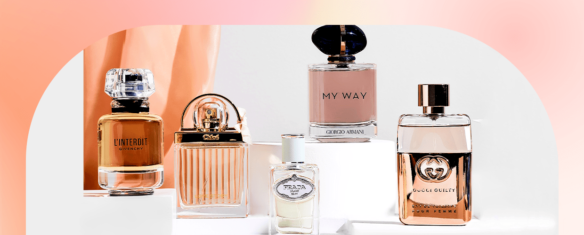
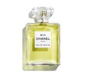
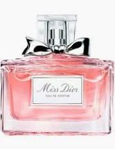
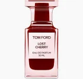
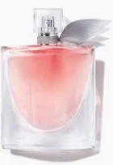
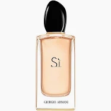

Bem-vindo ao Mundo dos Perfumes:
O universo da perfumaria é vasto e encantador, repleto de fragrâncias que despertam emoções e memórias.
Escolher o perfume ideal pode parecer uma tarefa desafiadora, mas com as recomendações certas, você encontrará a fragrância perfeita para cada momento da sua vida.
Escolhendo as Melhores Marcas para Cada Ocasião
 Neste blog post, vamos apresentar as melhores marcas de perfumes do mercado, indicar opções para diferentes ocasiões, dar dicas de como escolher o perfume ideal e discutir as tendências atuais em perfumaria.
Além disso, vamos fornecer dicas de onde comprar perfumes de alta qualidade com segurança.
Melhores Marcas de Perfumes
Chanel 
Conhecida pela elegância e sofisticação, a Chanel oferece perfumes icônicos como o Chanel Nº 5 e o Coco Mademoiselle, que são sinônimos de luxo e feminilidade.
Dior Famosa por suas fragrâncias intensas e luxuosas, a Dior destaca-se com perfumes como J'adore e Sauvage, que combinam qualidade e estilo.
Tom Ford Perfumes únicos e marcantes são a especialidade de Tom Ford, com destaques como Black Orchid e Oud Wood, que exalam poder e sensualidade.
Lancôme Com perfumes femininos icônicos como La Vie Est Belle e Trésor, a Lancôme é uma marca que celebra a beleza e a elegância em cada gota.
Giorgio Armani Fragrâncias sofisticadas e elegantes são a assinatura de Giorgio Armani, com sucessos como Acqua di Giò e Sí, que são perfeitos para todas as ocasiões.
Curta essa música enquanto navega em nosso blog! Continue assistindoTop 5 melhores perfumes de 2024
Assista nosso vídeo!Conheça nossos produtos e aproveite nossas ofertas.
Visite nosso parceiroEsse é o nosso Blog